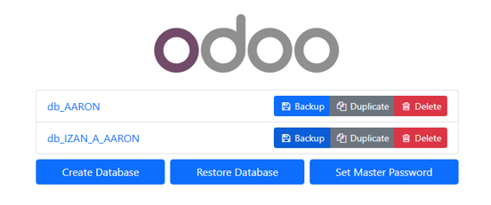

Importar, Exportar y Backup en Odoo
Sigue estos pasos para realizar un backup de tus datos:
1. Entrar en la dirección que aparece en el buscador, y cuando se nos abra veremos lo siguiente:
2. Cuando hagamos clic en backup se nos abrirá esta pestaña en la que debemos utilizar la master password que antes comenté que sería necesaria más adelante.
3. Al hacer clic en backup nos aparecerá el siguiente mensaje.
4. Y en descargas veremos ya nuestro backup.
Cómo importar el backup
Sigue estos pasos para restaurar el backup:
1. Para restaurar la base de datos de mi compañero en mi PC, vendremos a esta página y clicaremos en "Restore DATABASE".
2. Una vez aquí tendremos que rellenarlo con nuestra Master Password que había que guardársela, el archivo ZIP de nuestro compañero y un nombre, que no sea igual que el otro para que no se sobrescriba.
3. Una vez aquí ya vemos las dos bases de datos, la de mi compañero y la mía. Clicamos encima del nombre de la de mi compañero.
4. Una vez aquí puedes registrarte con las credenciales de mi compañero o podemos seleccionar otra base de datos clicando en "Seleccionar".
5. Y aquí podrás seleccionar la base de datos de quien quieras.